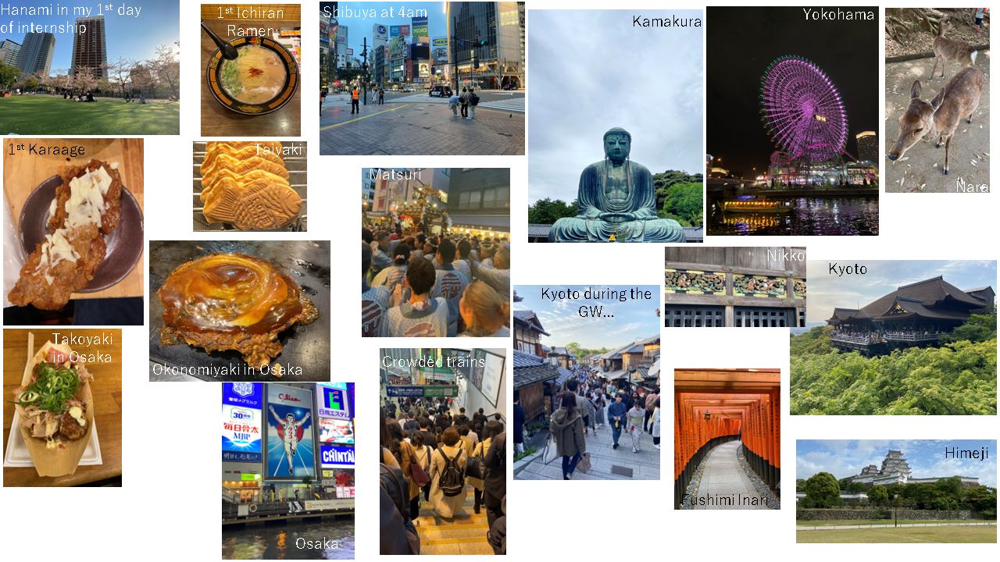

My Internship at Sony Research in Tokyo
From April to July 2023 I had the opportunity to do an internship at Sony Research. It was an amazing experience not only for improving my technical skills but also contributed to my personal growth.
At work
Last April, I arrived in Tokyo, Japan for the first time in my life to do an internship at Sony Research. I was very excited about this opportunity, but also a bit nervous. I had never been in Japan before, and I was going to be there for more than 3 months. I was also a bit nervous about the language, since I did not speak Japanese. However, I was very excited about the opportunity to work in a big company like Sony, to learn new research topics, and about the Japanese culture.
All of those nervous and excitement feelings were gone after the first day. I was lucky to meet a group of Spanish people the day after I landed in Tokyo and we went to a Hanami in Ueno park to see the Sakura. It was amazing and I started to notice the first cultural differences — e.g., everyone cleaned up after the Hanami, and the next day the park was clean again.
After the first weekend resting from the trip and looking at places around my home, I went to the office the next Monday, and again more cultural differences (most of them very positive!). People waited for the train in organized queues! The train was very crowded, but that was something I was expecting.
I was lucky because my first working day coincided with Japan's official first working day of April, so I went to a Hanami with the team. I felt very lucky to have a great team, and most importantly, they were always open and ready to help me. In the next weeks I also met other interns from different countries, so I could learn about other cultures too.
Visiting Japan
Apart from working, I visited different Japanese cities. My stay in Japan coincided with the Golden Week, a long vacation in Japan. I took advantage of this to visit Kyoto, Osaka, Nara, and Himeji Castle. During the weekends, I also visited Kamakura, Nikko, Yokohama, and different parts of Tokyo.
I enjoyed the Takoyaki and Okonomiyaki in Osaka (a must try!), different kinds of Ramen, Sushi, Sashimi, Udon, Tempura, etc. I also experienced the "Omakase" where a fantastic chef prepared a closed menu that depended on what he had bought that day at the market.

Conclusion
Overall, the internship experience at Sony plus the opportunity to live in Japan was amazing — a 10/10. Going abroad to a different country without knowing the language can be something overwhelming, but the experience is worth it and I would recommend it to everyone. Not only to grow as a researcher but also as a person.
Thank you
I want to thank Sony for bringing me this amazing opportunity, and my tutor Koichi and all my collaborators: Marco, Naoki, Jesse, Wei-Hsiang, Yuki, and all the researchers and interns from the Music Foundation and Generative Models Teams — Kinwai, Roser, Frank, Donjoung, Kelly…
I also want to thank my Spanish friends who became a family: Nai, Rocío, Dani, Astrid — I will see you soon again in Japan.
Recommendations
If you are thinking about traveling to Japan, I would recommend learning at least Katakana — it will help you read menus in restaurants.